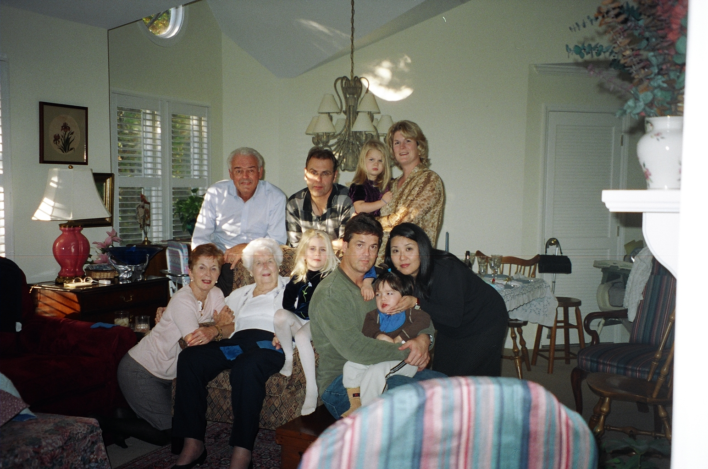
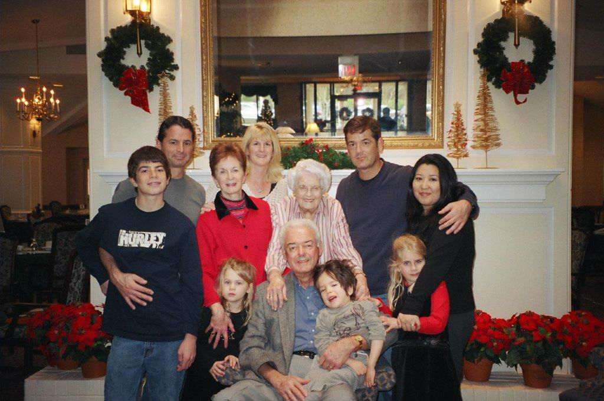

Buffalo, March 2001
SJ's baptism

Buffalo, July 2001
Celebrating Great-Grandmother Eleanor's 90th birthday

Buffalo, July 2002

Schenectady, February 2004

Raleigh, November 2005

Tysons Corner VA, July 2006

Raleigh, December 2006

Cary, May 2008

Raleigh, November 2008

Wyckoff, NJ, September 2009
At Great-Uncle Brian's house, the day after first cousin once-removed Allison Duffy (not pictured) entered into holy matrimony with Jeff Weber (also not pictured).

Wyckoff, NJ, September 2009